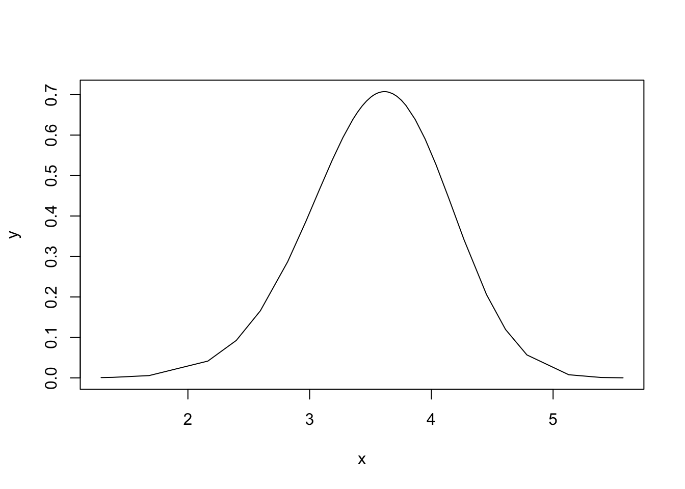

How INLA deals with hyper-parameters: 1D Reconstruction example
Haakon Bakka
BTopic121 updated 8. December 2017
1 About
In this topic we perform inference on a series of increasingly complex models, to show the theory behind INLA.
1.1 Packages
library(INLA)1.2 Practical problem
There is some smooth function that we observe at integer values, and with noise. The goal is to reconstruct this function, with uncertainty estimates.
set.seed(2017)
n = 50
idx = 1:n
fun = 100*((idx-n/2)/n)^3
y = fun + rnorm(n, mean=0, sd=1)
# - add some noise
plot(idx, y)
lines(fun, col="darkgreen")df = data.frame(y=y, idx=idx)1.3 Assumed hierarchical model
Data: Gaussian observations (iid) with precision \(\tau\) \[ y_{i} \mid x_{i}, \theta \;\sim\; {\mathcal N}(x_{i}, \tau^ {-1}) \]
Latent model: A random walk of second order
model="rw2"
\[\pi(\mathbf{x} \mid \theta) \propto \theta^{(n-2)/2} \exp\left( -\frac{\theta}{2} \sum_{i=3}^{n} (x_{i} - 2x_{i-1}+x_{i-2})^{2} \right) \]
- Hyperparameter: The smoothing parameter \(\theta\) and the precision \(\tau\) have the inla code default priors (
inla.doc("gaussian"), andinladoc("rw2")).
This means that \(\theta\) has a \(\Gamma(a,b)\) prior \[ \pi(\theta) \propto \theta^{a-1}\exp\left(-b\theta\right), \quad \theta > 0 \] with \(a = 1\) and \(b=5e-05\).
Note that this model does is not a good model! It is not written with good interpretable parameters, the Gamma prior is not a good choice for modeling. The RW2 model is not a proper model. But, this topic is not about good modeling, but at computing inference, so we will ignore such concerns.
2 Model 1: Gaussian fixed-hyper posterior
Assume first that \(\theta=1\) and \(\tau=1\), fixed and known (so no hyper-priors). Then \[\begin{align*} \pi(x | y=\text{data}) &\propto \pi(x , y=\text{data}) \\ &\propto \pi(y=\text{data}|x) \pi(x) \end{align*}\] where everything is Gaussian. To renormalise, we need to compute a determinant.
We fit this model:
hyper1 = list(prec=list(initial=0, fixed=T))
formula1 = y ~ -1 + f(idx, model="rw2", hyper=hyper1)
res1 = inla(formula1, family="gaussian", data=df,
control.family = list(hyper = hyper1))We plot the result:
local.plot.result = function(res) {
plot(idx, y)
lines(res$summary.random$idx$mean, col="blue")
lines(res$summary.random$idx$`0.025quant`, col="grey")
lines(res$summary.random$idx$`0.9`, col="grey")
lines(fun, col="darkgreen")
}
local.plot.result(res1)We will not discuss these results, or how surprisingly good they are for such a simple model. Think about the computations needed to get this plot. What are the different lines computed from? (Feel free to write down the equations.)
3 Model 2: Single hyper-parameter
We keep \(\tau=1\) fixed and do inference on \(\theta\).
3.1 Posterior for \(\theta\)
Since \[ \mathbf{x}, \mathbf{y} \mid \theta \;\sim\; {\mathcal N}(\cdot,\cdot) \] (derived using \(\pi(\mathbf{x}, \mathbf{y} \mid \theta) \propto \pi(\mathbf{y} \mid \mathbf{x}, \theta) \: \pi(\mathbf{x} \mid \theta)\)),
we can compute (numerically) all marginals, using that
\[\begin{align*} \pi(\theta\mid\mathbf{y}) &= \frac{\pi(\mathbf{x}, \theta \mid \mathbf{y})}{\pi(\mathbf{x} \mid \mathbf{y}, \theta)}\\ &\propto \frac{%% \overbrace{\pi(\mathbf{x}, \mathbf{y}\mid\theta)}^{\text{Gaussian}} \; \pi(\theta)}{\underbrace{\pi(\mathbf{x} \mid \mathbf{y}, \theta)}_{\text{Gaussian}}} \end{align*}\]
3.2 Computational INLA code
We fit this model:
formula2 = y ~ -1 + f(idx, model="rw2")
res2 = inla(formula2, family="gaussian", data=df,
control.family = list(hyper = hyper1),
control.compute = list(config=TRUE))We plot the posterior of \(\theta\)
plot(res2$marginals.hyperpar$`Precision for idx`, type="l", xlim=c(0, 120))Exploring this posterior is not nice, so the parametrisation used internally in INLA is \(\log(\theta)\), meaning that the following posterior is the one we explore:
plot(res2$internal.marginals.hyperpar$`Log precision for idx`, type="l")
This posterior is nice.
3.2.1 Optimization and exploration of hyper-parameters
To figure out how INLA found the psoterior mode, we can look into res2$logfile, where we find the fopllowing (slightly edited) (may vary a bit what lines they are).
[272] "max.logdens= -91.300695 fn= 1 theta= 4.010000 range=[-10.706 11.878]"
[273] "max.logdens= -91.300093 fn= 2 theta= 3.990000 range=[-10.709 11.883]"
[274] "max.logdens= -91.300081 fn= 5 theta= 3.989484 range=[-10.709 11.883]"
[275] "max.logdens= -91.300072 fn= 8 theta= 3.987510 range=[-10.709 11.884]"
[276] "Iter=1 |grad| = 0.000112(pass) |x-x.old|=0.0125 |f-f.old|=0.000322(pass) "
[277] "Number of function evaluations = 10"
[278] "Compute the Hessian using central differences and step_size[0.1]. Matrix-type [dense]"
[280] " 3.417201"
[285] "StDev/Correlation matrix (scaled inverse Hessian)"
[286] " 0.540960"
[287] "Compute corrected stdev for theta[0]: negative 1.114019 positive 0.884652"
[288] "max.logdens= -91.300070 fn= 16 theta= 3.987510 range=[-10.709 11.884]"
[289] " config 0=[ 1.50] log(rel.dens)=-1.35, [3] accept,
[290] " config 1=[ 0.00] log(rel.dens)=-0.00, [1] accept,
[291] " config 2=[ -0.75] log(rel.dens)=-0.26, [2] accept,
[292] " config 3=[ 0.75] log(rel.dens)=-0.31, [0] accept,
[293] " config 4=[ 3.00] log(rel.dens)=-6.51, reject,
[294] " config 5=[ -1.50] log(rel.dens)=-0.95, [3] accept,
[295] " config 6=[ 2.25] log(rel.dens)=-3.34, [2] accept,
[296] " config 7=[ -2.25] log(rel.dens)=-1.99, [1] accept,
[297] " config 8=[ -4.50] log(rel.dens)=-6.62, reject,
[298] " config 9=[ -5.25] log(rel.dens)=-8.60, reject,
[299] " config 10=[ -3.00] log(rel.dens)=-3.31, [0] accept,
[300] " config 11=[ -3.75] log(rel.dens)=-4.86, [3] accept, 3.2.2 Representing the posterior
Continuing reading the logfile above:
[302] "Combine the densities with relative weights:"
[303] " config 0/ 9=[ 0.00] weight = 1.000 adjusted weight = 0.975 neff = 6.61"
[304] " config 1/ 9=[ -0.75] weight = 0.772 adjusted weight = 0.763 neff = 7.34"
[305] " config 2/ 9=[ 1.50] weight = 0.259 adjusted weight = 0.266 neff = 5.37"
[306] " config 3/ 9=[ 0.75] weight = 0.735 adjusted weight = 0.727 neff = 5.96"
[307] " config 4/ 9=[ 2.25] weight = 0.036 adjusted weight = 0.039 neff = 4.85"
[308] " config 5/ 9=[ -2.25] weight = 0.137 adjusted weight = 0.149 neff = 9.07"
[309] " config 6/ 9=[ -1.50] weight = 0.386 adjusted weight = 0.396 neff = 8.16"
[310] " config 7/ 9=[ -3.00] weight = 0.037 adjusted weight = 0.044 neff = 10.10"
[311] " config 8/ 9=[ -3.75] weight = 0.008 adjusted weight = 0.010 neff = 11.25"
[312] "Done." Here we see the config, the configurations, the values of \(\theta^* = \log(\theta)\) chosen to represent the posterior.
To figure out where INLA actually computed the posterior, we can look at:
str(res2$misc$configs$config[[1]], 1)## List of 9
## $ theta : Named num 3.19
## ..- attr(*, "names")= chr "Log precision for idx"
## $ log.posterior : num -0.265
## $ log.posterior.orig: num -0.265
## $ mean : num [1:100] -10.43 -9.64 -8.82 -7.99 -7.11 ...
## $ improved.mean : num [1:100] -10.43 -9.64 -8.82 -7.99 -7.11 ...
## $ skewness : num [1:100] NaN NaN NaN NaN NaN NaN NaN NaN NaN NaN ...
## $ Q :Formal class 'dgCMatrix' [package "Matrix"] with 6 slots
## $ Qinv :Formal class 'dgCMatrix' [package "Matrix"] with 6 slots
## $ Qprior.diag : num [1:100] 162755 162755 162755 162755 162755 ...data.frame( theta = unlist(lapply(res2$misc$configs$config, function(x) x$theta)),
log.post = unlist(lapply(res2$misc$configs$config, function(x) x$log.posterior)))## theta log.post
## 1 3.2 -0.27
## 2 2.8 -1.02
## 3 2.3 -2.21
## 4 1.9 -3.80
## 5 1.5 -5.76
## 6 4.0 -0.30
## 7 4.5 -1.27
## 8 4.9 -3.07
## 9 5.3 -5.86
## 10 3.6 0.003.3 Inference results
We plot the result:
local.plot.result(res2)
What are the quantiles supposed to cover? The data, or …? Is this result better or worse than the previous?
4 Model 3: 2 hyperparameters
Using both hyper-parameters, we get.
res3 = inla(formula2, family="gaussian", data=df)We plot the result:
local.plot.result(res2)Please look into the res3$logfile and see what changes in 2 dimensions. [Todo: create followup presentation.]